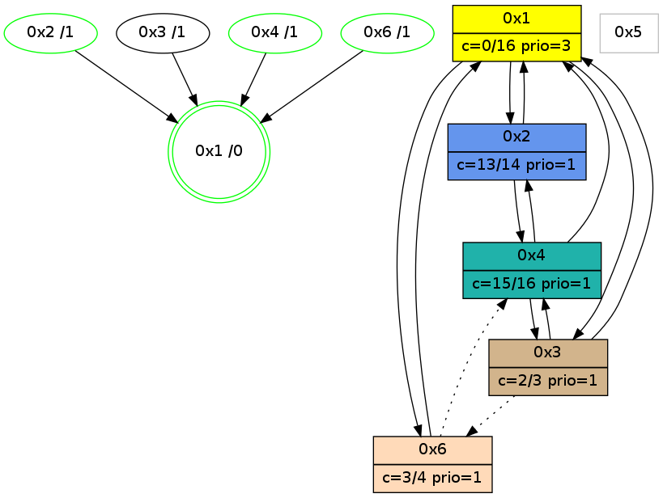

>> << IDX [start] -100 -25 -5 +0 +5 +25 +100 [1150.03899908]
 Previous packets
----------------------------------------------------------------------
1145.016473 beacon01(adaf) #0 coord=01,02,05,03,04,06 cycle=944.0ms assoc
-- color-indic=0 64 c2 ae
1145.026435 beacon02(adaf) #0 coord=01,02,05,03,04,06 cycle=944.0ms assoc 64 93 51
1145.036434 beacon05(adaf) #0 coord=01,02,05,03,04,06 cycle=944.0ms assoc 64 35 7b
1145.046435 beacon03(adaf) #0 coord=01,02,05,03,04,06 cycle=944.0ms assoc 64 a9 5f
1145.056434 beacon04(adaf) #0 coord=01,02,05,03,04,06 cycle=944.0ms assoc 64 0f 75
1145.066435 beacon06(adaf) #0 coord=01,02,05,03,04,06 cycle=944.0ms assoc 64 7b 69
1145.078011 [STC(4)->1 #0.203 new-neigh,tree-change,inconsistent-stability,stable,to-color d=1]
1145.081802 [Hello(2): seq=1433 sym=1,4 color=13 sysInfo=hasWarning,MaxColorIndicationCalled,ColoringModeIndicationCalled,MaxColorResponseCalled stat=1:15,7,5,0/4:15,6,4,2]
1145.083586 [Hello(3): seq=945 sym=1,4 asym=6 color=2 sysInfo=hasWarning,MaxColorIndicationCalled,ColoringModeIndicationCalled,MaxColorResponseCalled stat=1:11,15,4,1/4:10,10,0,1/6:13,3,13,5]
----------------------------------------------------------------------
1146.020980 beacon01(adaf) #0 coord=01,02,05,03,04,06 cycle=944.0ms assoc
-- color-indic=0 64 9c cf
1146.030941 beacon02(adaf) #0 coord=01,02,05,03,04,06 cycle=944.0ms assoc 64 cd 30
1146.040941 beacon05(adaf) #0 coord=01,02,05,03,04,06 cycle=944.0ms assoc 64 6b 1a
1146.050942 beacon03(adaf) #0 coord=01,02,05,03,04,06 cycle=944.0ms assoc 64 f7 3e
1146.060941 beacon04(adaf) #0 coord=01,02,05,03,04,06 cycle=944.0ms assoc 64 51 14
1146.070941 beacon06(adaf) #0 coord=01,02,05,03,04,06 cycle=944.0ms assoc 64 25 08
1146.082628 [Hello(4): seq=947 sym=2,1,3 sysInfo=hasWarning,MaxColorIndicationCalled,ColoringModeIndicationCalled,MaxColorResponseCalled stat=2:1,3,1,0/1:14,11,7,0/3:0,0,0,0]
1146.092594 [Hello(1): seq=848 sym=2,4,6,3 color=0 sysInfo=hasWarning,MaxColorIndicationCalled,MaxColorResponseCalled,MaxColorRequestCalled,ColoringModeRequestCalled stat=2:8,3,15,0/4:14,0,1,4/6:6,2,5,0/3:3,0,3,0]
----------------------------------------------------------------------
1147.025484 beacon01(adaf) #0 coord=01,02,05,03,04,06 cycle=944.0ms assoc
-- color-indic=0 64 58 a0
1147.035445 beacon02(adaf) #0 coord=01,02,05,03,04,06 cycle=944.0ms assoc 64 09 5f
1147.045447 beacon05(adaf) #0 coord=01,02,05,03,04,06 cycle=944.0ms assoc 64 af 75
1147.055445 beacon03(adaf) #0 coord=01,02,05,03,04,06 cycle=944.0ms assoc 64 33 51
1147.065446 beacon04(adaf) #0 coord=01,02,05,03,04,06 cycle=944.0ms assoc 64 95 7b
1147.075447 beacon06(adaf) #0 coord=01,02,05,03,04,06 cycle=944.0ms assoc 64 e1 67
----------------------------------------------------------------------
1148.029990 beacon01(adaf) #0 coord=01,02,05,03,04,06 cycle=944.0ms assoc
-- color-indic=0 64 14 10
1148.039950 beacon02(adaf) #0 coord=01,02,05,03,04,06 cycle=944.0ms assoc 64 45 ef
1148.049950 beacon05(adaf) #0 coord=01,02,05,03,04,06 cycle=944.0ms assoc 64 e3 c5
1148.059951 beacon03(adaf) #0 coord=01,02,05,03,04,06 cycle=944.0ms assoc 64 7f e1
1148.069951 beacon04(adaf) #0 coord=01,02,05,03,04,06 cycle=944.0ms assoc 64 d9 cb
1148.079951 beacon06(adaf) #0 coord=01,02,05,03,04,06 cycle=944.0ms assoc 64 ad d7
1148.091394 [Hello(1): seq=849 sym=2,6,3 color=0 sysInfo=hasWarning,MaxColorIndicationCalled,MaxColorResponseCalled,MaxColorRequestCalled,ColoringModeRequestCalled stat=2:9,3,15,0/6:6,2,5,0/3:3,0,3,0]
1148.093441 [STC(1) #0.204 new-neigh,tree-change,inconsistent-stability,stable,to-color d=0]
1148.095316 [Hello(4): seq=948 sym=2,1,3 sysInfo=hasWarning,MaxColorIndicationCalled,ColoringModeIndicationCalled,MaxColorResponseCalled stat=2:1,3,1,0/1:15,11,7,0/3:1,0,0,0]
----------------------------------------------------------------------
1149.034493 beacon01(adaf) #0 coord=01,02,05,03,04,06 cycle=944.0ms assoc
-- color-indic=0 64 d0 7f
1149.044454 beacon02(adaf) #0 coord=01,02,05,03,04,06 cycle=944.0ms assoc 64 81 80
1149.054454 beacon05(adaf) #0 coord=01,02,05,03,04,06 cycle=944.0ms assoc 64 27 aa
1149.064456 beacon03(adaf) #0 coord=01,02,05,03,04,06 cycle=944.0ms assoc 64 bb 8e
1149.074454 beacon04(adaf) #0 coord=01,02,05,03,04,06 cycle=944.0ms assoc 64 1d a4
1149.084457 beacon06(adaf) #0 coord=01,02,05,03,04,06 cycle=944.0ms assoc 64 69 b8